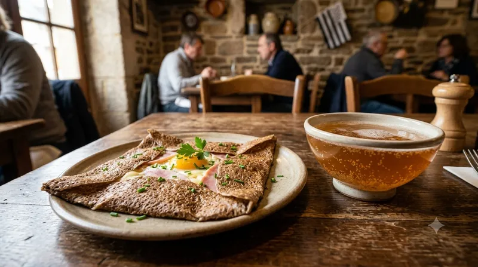

El Mont-Saint-Michel tiene un plato famoso, una docena de creperías y muchos cafés en una única calle estrecha — casi todos pensados para la multitud del día. Se puede comer bien, pero conviene saber qué se paga: la leyenda, la vista o simplemente estar en la isla. Aquí: qué probar, dónde comer en la isla y en el continente, y cómo no quedarse sin cena por la noche.
Es más fácil encajar la comida en el paseo que al revés. La audioguía autoguiada de TouringBee por la isla es una ruta de unas 2 horas que empiezas cuando quieras: antes de comer, después de la tortilla o hacia la tarde, cuando el pueblo se vacía.
En resumen
- La famosa tortilla de la Mère Poulard es una experiencia y un trozo de historia, no una comida barata; comprueba el precio en la carta actual.
- Lo más sencillo en la isla es una crepería de la Grande Rue: galettes saladas de trigo sarraceno y crepes dulces.
- Productos locales que buscar en la carta: el cordero de las marismas y los mejillones de la bahía — ambos con denominación protegida AOP.
- En el continente, junto al aparcamiento (La Caserne), hay más donde elegir y suele ser más tranquilo.
- Reserva la cena: los viajeros suelen notar que por la noche abren muchos menos sitios en la isla.
La tortilla de la Mère Poulard: qué es y si merece la pena
El plato más conocido de la isla data de finales del siglo XIX, cuando Annette Poulard regentaba aquí una posada para peregrinos y viajeros. Su tortilla — esponjosa, batida casi hasta hacer espuma y cocinada al fuego en sartenes de cobre — se hizo famosa, y la «Mère Poulard» entró en la historia del monte. El restaurante con su nombre sigue a la entrada del pueblo; allí baten los huevos a un ritmo que se oye desde la calle, y eso forma parte del espectáculo.
Seamos claros: es una tortilla cara. Los precios de la tortilla sola y de los menús varían bastante según la fuente — de varias decenas de euros por una tortilla a más por un menú degustación —, así que consulta la carta actual en la web del restaurante antes de ir. Muchos viajeros la describen como una experiencia que se paga una vez, no como la mejor relación calidad-precio para comer bien. Si quieres el sabor sin una comida completa, las famosas galletas de la Mère Poulard son un buen término medio: se venden en la isla y mucho más allá, y son un recuerdo clásico.

Qué probar además de la tortilla
- Galettes y crepes. Las galettes saladas de trigo sarraceno y las crepes dulces son la comida más sencilla y previsible en la isla; hay varias creperías en la Grande Rue.
- Cordero de las marismas (agneau de pré-salé). Los corderos pastan en los prados que rodean la bahía y que inunda el mar, y la carne tiene un sabor especial. Busca «Prés-salés du Mont-Saint-Michel AOP» en la carta.
- Mejillones de la bahía. Los mejillones criados en estacas (bouchot) en la bahía fueron el primer marisco de Francia con AOP. La temporada es limitada, así que no están en la carta todo el año.
- Ostras de Cancale. Si sigues por la costa, Cancale está a entre media hora y una hora y es famosa por sus ostras (más en nuestra guía El Mont y Saint-Malo en un día ).
- Sidra y postres. En Normandía y Bretaña, la sidra es la bebida tradicional con las galettes.
Dónde comer: isla o continente
En la isla. La ventaja es el ambiente y estar ya dentro de las murallas. Las pegas: la multitud a mediodía, los precios turísticos y poca oferta por la noche. Las mejores mesas, con vistas a la bahía, se ocupan primero.
En el continente, junto al aparcamiento (La Caserne y alrededores). Aquí están los hoteles y restaurantes para quienes se quedan a dormir; suele ser más tranquilo, y desde algunas terrazas se ve el Mont. Si duermes en el continente o vuelves al coche, suele ser lo más cómodo para cenar (consulta nuestra guía de dónde alojarse).
Un consejo: lleva algo de efectivo — las condiciones de pago varían de un sitio a otro.

Cuándo comer: almuerzo y cena
Almuerzo. Desde mediodía hasta primera hora de la tarde la Grande Rue está a tope — y es también el pico en creperías y cafés. Si puedes, come un poco antes o después de lo habitual: la cola es más corta y el paseo por la isla más tranquilo (más sobre multitudes y horarios en nuestra guía cuándo visitar ).
Cena. Quienes se quedan a dormir suelen notar lo mismo: cuando se van los visitantes del día, muchas creperías y tiendas baratas de la isla cierran, y quedan abiertos sobre todo los restaurantes de hotel. Por eso conviene reservar la cena — o cenar en el continente.
Pícnic. Otra opción es comprar comida en el continente y comer al aire libre con vistas a la bahía. La basura, por supuesto, nos la llevamos.
Entre comidas: la propia isla
En el Mont-Saint-Michel la comida es una pausa; lo principal es la isla. La audioguía autoguiada de TouringBee te lleva desde las puertas de la ciudad por la Grande Rue hasta la abadía y por las murallas: 17 paradas, una ruta de unas 2 horas, un mapa GPS sin conexión. Empieza cuando te venga bien — por ejemplo, por la mañana antes de la multitud del mediodía o hacia la tarde, cuando el pueblo se vacía, y luego cena tranquilamente. Los relatos están escritos por historiadores locales y guías con experiencia, y tú los inicias en cada parada. Un solo pago, un año de acceso, 8 idiomas. La entrada a la abadía no está incluida. Más en nuestra página de la audioguía.
Encaja la isla en tu almuerzo
17 paradas, una ruta GPS sin conexión, relatos escritos por historiadores locales — unas 2 horas, empieza cuando quieras.
Audioguía — desde €9,99~2 h de ruta · sin conexión · un solo pago · un año de acceso
Consejos prácticos
- Reserva la cena en la isla, sobre todo en temporada.
- Come antes o después del pico del mediodía para evitar colas.
- Comprueba el precio de la tortilla de la Mère Poulard en la carta actual, no en reseñas antiguas.
- Busca productos locales AOP: cordero de las marismas y mejillones de la bahía.
- Lleva agua: la subida a la abadía es larga y empinada.
- Si duermes en el continente, cenar allí suele ser más fácil y tranquilo.
Preguntas frecuentes
¿Cuánto cuesta la tortilla de la Mère Poulard?
Depende del formato y cambia con el tiempo; según la fuente, desde varias decenas de euros por una tortilla hasta más por un menú degustación. Consulta la carta actual del restaurante.
¿Merece la pena la tortilla de la Mère Poulard?
Si te interesan la historia y el espectáculo, sí, como experiencia puntual. Si solo quieres una comida contundente y barata, una crepería es más sencilla.
¿Dónde se come más barato en el Mont-Saint-Michel?
Normalmente en las creperías de la Grande Rue o en el continente, junto al aparcamiento. Otra opción es un pícnic con compra hecha en el continente.
¿Se puede cenar en la isla por la noche?
Sí, pero hay menos donde elegir que de día: muchos sitios baratos cierran antes. Mejor reservar o cenar en el continente.
¿Qué platos locales conviene probar?
Galettes y crepes, cordero de las marismas (AOP Prés-salés du Mont-Saint-Michel) y mejillones de la bahía (AOP), y de recuerdo las galletas de la Mère Poulard.
Qué planificar a continuación
La conclusión
En el Mont-Saint-Michel se come bien si sabes qué esperar: la tortilla de la Mère Poulard es historia y espectáculo a su precio, las creperías un almuerzo sencillo, y el cordero y los mejillones el auténtico sabor de la bahía. Come fuera del pico, reserva la cena o cena en el continente — y dedica el tiempo entre comidas a la propia isla, a tu ritmo y con todas sus historias.
Algunos enlaces de esta página llevan a nuestro producto, la audioguía de TouringBee. No tenemos ninguna colaboración pagada con los restaurantes mencionados. Consulta nuestra divulgación de afiliados.